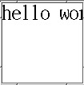
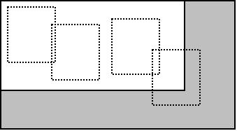

在Python中用PIL做验证码
为了防垃圾机器人，验证码是一种常用的手段。而自己来实现验证码也是很简单的事，只需要了解一点图像处理的方法就可以了。 PIL 是 Python 的一个图像处理库，可以很方便地处理位图。
首先考虑验证的制作方法，我们只想简单点的情况：
- 生成一个固定大小的白色图片。
- 在图片上随机写几个字母。
就是这样，最简单的情况。我们先实现，再看怎么能加点变化，以至不那么容易被破掉。
后面不会细讲 PIL 的使用方法，有兴趣，请浏览官方的文档。
1. 基本操作
先来看如何得到一张带指定字母的图片。 PIL 中对图片的操作一般是通过 image 对象来完成，这个对象可以是从图片文件中得到的，已经包含了位图信息的对象。也可以一个我们指定大小创建的，不包含图片信息的“空对象”。
# -*- coding: utf-8 -*- from PIL import Image im = Image.new('1', (100, 100), 'white') im.show()
上面所示的代码，我们就可以得到一个 100x100 的白底空图片了。并且你可以看到图片显示了出来。
Image 的 new 方法新创建一个图片对象，第一个参数指定“模式”，不同的模式对应的每个像素的颜色表示也不同。比如：
- 1 按文档说是单色模式，但事实上它和 L 一样，是灰度模式。
- L 灰度模式，每个像素的颜色使用 0-255 的整数表示。
- RGBA 三元色加透明度的表示方式，每个像素的颜色使用类似 (12,34,23,1) 的 tuple 表示。
关于模式不细说了，我们只使用最简单的单色，我们最终的图片也只需要黑白两色。
new 的第二个参数指定图片的大小，第三个参数指定背影色。
show 方法是使用系统提供的工具把图片马上显示出来。
接下来要做的事，就是在这张白色图片上写几个字符了，这要用到 ImageDraw 对象：
# -*- coding: utf-8 -*- from PIL import Image from PIL import ImageDraw im = Image.new('1', (100, 100), 'white') draw = ImageDraw.Draw(im) draw.text((0, 0), 'hello world!') im.show()
结果如下图：

我们使用 Draw 对象的在新创建的白底图片的 (0,0) 位置写了 hello world! 。
字有些小，这是使用默认的字体的原因。我们可以使用指定的字体来生成验证码。
对于传统的位图字体， PCF， BDF 扩展名结束，先使用 PIL 提供的 pilfont.py 工具，产生 PIL 使用的专用字体文件：
pilfont.py xxx.pcf
当前目录下，会得到两个需要的文件， xxx.pil 和 xxx.pbm ，然后要使用字体时：
# -*- coding: utf-8 -*- from PIL import Image from PIL import ImageDraw from PIL import ImageFont FONT = ImageFont.load('xxx.pil') im = Image.new('1', (100, 100), 'white') draw = ImageDraw.Draw(im) draw.text((0, 0), 'hello world!', font=FONT) im.show()
在使用 text 方法时，使用 font 参数指定字体就可以了。
现在字会变得大多了：

如何要使用现在常用的矢量字体，可以这样：
font = ImageFont.truetype("arial.ttf", 15)
好了，能写出字了，就可以当验证码来用了。剩下就是加入一些图像的变化，以使验证码不容易被机器识别。
2. 加入变化
现在我们只是生成了一张图片，至于图片中的字母，随便找一个 OCR 软件都可以识别出来，我们还需要对它做一些变化处理。
验证码识别的难点之一就是字符分割，只要单个字符分割出来了，通过提取的样本进行最简单的匹配都可以达到很高的识别率。而给字符分割制造麻烦的最简单办法就是让字符与字符粘在一起。
前面已经介绍了如何在图片上写字。而让字符粘在一起，只需要分别控制每个字符的位置即可实现。这里，我自己实现的方法，是在一个足够小的区域中，让每个字符随机分布，因为随机选择的区域有限，所以，字符与字符之前有很大的概率会连在一起。另外，随机分布的话，还需要判断字符与字符之间的水平距离差，这个差值要大于一个临界值，以使人可以容易分辨出字符从左到右的顺序。
代码看最后的吧，这里使用示意图说明实现方法：

假设我们最后得到的图片长是 3-4 的距离，那么 4 个字符可以随机分布的区域在 1-2 之间，因为字符的位置是按矩形的左上角算的，避免出免字符超出边界而看不到的情况。如图所示，当 1-2 之间距离足够小的时间， 4 个字符就有很大的概率会重叠了。
另外的一点，就是对于字符与字符之间的水平距离，比如图中 5 和 6 的水平距离，它们的距离应该大于一个值，以保证这 4 个字符可以被看得出从左到右的顺序。而我们的字符是随机生成，并且是随机分布，所以，我们最后也是根据这 4 个字符的 X 轴位置的升序排列来得到“正确答案”的。
字符随机分布后，为了进一步加大机器识别的难度，我们还可以添加几根干扰线，这个就比较简单了。如图所示：

我们把整个图片看成 4 个象限，干扰线总是从第一象限的随机一点开始，以另外三个象限的随机一点结束。这样，干扰线同样也有很大的概率可以覆盖到图片上的字符。
关于画线，在 PIL 中，可以使用 ImageDraw 对象的 line 方法：
# -*- coding: utf-8 -*- import PIL from PIL import Image from PIL import ImageDraw im = Image.new('1', (500, 500), 'white') draw = ImageDraw.Draw(im) draw.line(((0, 0), (100, 200))) im.show()
3. 最后完成
要做的事差不多了，最后输出图片就可以了。因为我们是验证码应用，所以不需要把图像的数据写到具体的文件当中，只需要输出字节流让应用返回给浏览器即可。
保存图像信息，直接使用 Image 对象的 save 方法即可。这个方法接受两个参数，第一个参数是要写入的文件对象，第二个参数是指定文件类型。
fileio = StringIO() im.save(fileio, 'gif') im.show()
文件对象我们就使用 cStringIO 模块中的 StringIO 来代替了。
最后的效果是这样的：

更麻烦的，你可以给字符加入旋转效果，写一个字符就随机旋转一定角度。 PIL 本身提供了对图片进行线性变换的一些操作方法。如果这些不能满足你，你也可以精确控制每一个像素的值。
4. 代码
# -*- coding: utf-8 -*- #AUTHOR: yeshengzou # # gmail.com #DATE: 2012.4.23 #LICENCE: GPLv3 import PIL from PIL import Image from PIL import ImageDraw from PIL import ImageFont from random import randint from cStringIO import StringIO CHAR = 'acdefghijkmnpqrstuvwxyABCDEFGHJKLMNPQRSTUVWXY345789' LEN = len(CHAR) - 1 PADDING = 30 X_SPACE = 6 #两个字符之间最少相隔多少个像素 TRY_COUNT = 30 #随机字符的位置尝试最多多少次,避免死循环 WIDTH = 70 HEIGHT = 40 FONT = ImageFont.load('font.pil') def gen(): im = Image.new('1', (WIDTH, HEIGHT), 'white') draw = ImageDraw.Draw(im) w, h = im.size #S = [(x, y, 'c')] S = [] x_list = [] y_list = [] n = 0 while True: n += 1 if n > TRY_COUNT: break x = randint(0, w - PADDING) flag = True for i in x_list: if abs(x - i) < X_SPACE: flag = False continue if not flag: break if not flag: continue y = randint(0, h - PADDING) x_list.append(x) y_list.append(y) S.append((x, y, CHAR[randint(0, LEN)])) if len(S) == 4: break for x, y, c in S: draw.text((x, y), c, font=FONT) #加3根干扰线 for i in range(3): x1 = randint(0, (w - PADDING) / 2) y1 = randint(0, (h- PADDING / 2)) x2 = randint(0, w) y2 = randint((h - PADDING / 2), h) draw.line(((x1, y1), (x2, y2)), fill=0, width=1) S.sort(lambda x, y: 1 if x[0] > y[0] else -1) char = [x[2] for x in S] fileio = StringIO() im.save(fileio, 'gif') im.show() return ''.join(char), fileio if __name__ == '__main__': print gen()